Total Conversion: Bible games of the early 1990s
Peter Shultz
Prologue: Bible Blaster
The Simpsons, “Alone Again, Natura-diddily”
(Fox Entertainment, February 2000)
Catechumen (N’Lightning Software Development, September, 2000)
video by DStecks, youtu.be/OMyONDI5HYA
Spiritual Warfare (Wisdom Tree Games, 1992)
Nihad Awad and Jeff Frischner discussing Left Behind: Eternal Forces (Inspired Media Entertainment, 2006).
Some questions
- What’s so funny about a Christian video game?
- What are these games trying to accomplish?
- Who is their audience?
- Are they an expression of faith, or a perversion of it?
The plan for today
- Sketch the reception of Wisdom Tree’s NES games
- History of Wisdom Tree
- How to play Christian video games
- So are they Christian?
- The first Christian game
1. Reception
Bringing the Bible to the youth
Bringing the Bible to the youth
“I just wanted to develop something that was adventuresome as well as exciting, but at the same time had a lot of different moral issues that could pretty much mold their personality,” Wilson says.
Adelle M. Banks. “Nintendo fans can learn Bible stories while zapping bad guys.” Austin American-Statesman. April 6, 1991.
Providing an alternative to secular culture
“I felt helpless and pretty much at the mercy of these games,” Wilson said, “because that’s what kids are interested in and excited about. This gives kids a wholesome alternative to the sorcery and violence.”
Jeffrey Brody, “Bible heroes in video games: Ninjas make way for Noah and Moses on Christian tapes.” The Orange County Register. March 19, 1991.
Providing an alternative to secular culture
Wisdom Tree was created to serve a niche market, the Christian Bookstore industry. The Bible-based games gave families an alternative to the sex and violence present in so many secular games. It was also an industry that Nintendo had no interest in.
Brenda Huff, Wisdom Tree sales supervisor (thevintagegamers.com)
Made for parents, not kids
“… It’s not even amusing as a Christian themed game because the people who made it weren’t kidding around and made it unironically. It’s like watching your 50 year old Dad skateboarding, all while he’s totally oblivious to how idiotic he looks and sounds.”
Ggdograa, on Steam \\ (http://steamcommunity.com/id/ggdograa/recommended/371180/)
Made for parents, not kids
“Bible Adventures. A game mixing all the fun of learning about God with all the excitement of wandering around aimlessly.… Christian children everywhere were disappointed when they received this game as a gift from parents”
Seanbaby, “The Worst Nintendo Games #19” \\ (http://www.seanbaby.com/nes/nes/w20-19.htm)
Exploiting Christian parents
“Christian youth products may appeal to worried parents even more than they appeal to their pubescent children.”
Hendershot, Heather. “Shake, Rattle & Roll: Production and Consumption of Fundamentalist Youth Culture.” Afterimage 22, no. 7–8 (1995): 19.
Pretending to be Christian
Bobby_Marks2:
“They weren’t a Christian company. They ripped off their own games, hid from lawsuits… and basically every other under-handed trick in the book.… I don’t mean that they weren’t ‘Christ-like.’ I mean that the decision to be Wisdom Tree and make these games was purely a business decision.”
(https://www.reddit.com/r/Games/comments/39jy0w/unlicensed_snes_game_super_3d_noahs_ark_is_coming/)
“Too much fun to stop”
2. History of Wisdom Tree
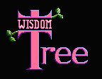
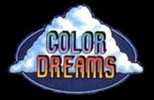
Unlicensed Nintendo games
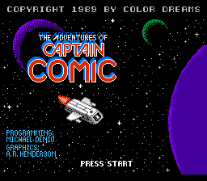
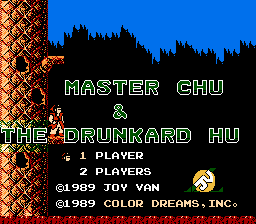
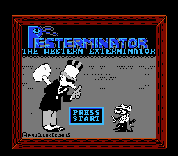
Wisdom Tree
Bible Adventures
Bible Adventures
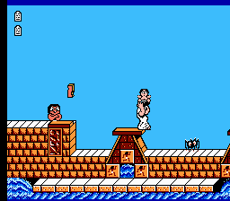
Bible Adventures
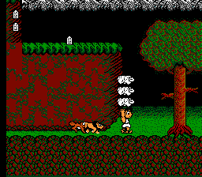
Bible Adventures
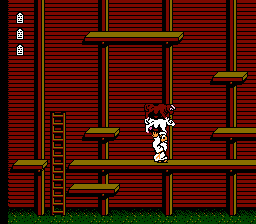
Bible Adventures
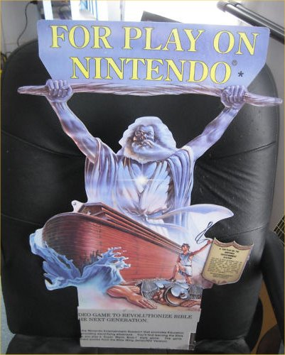
Bible Adventures
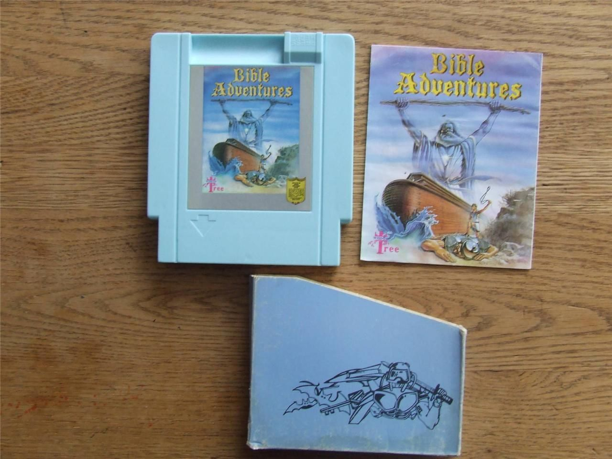
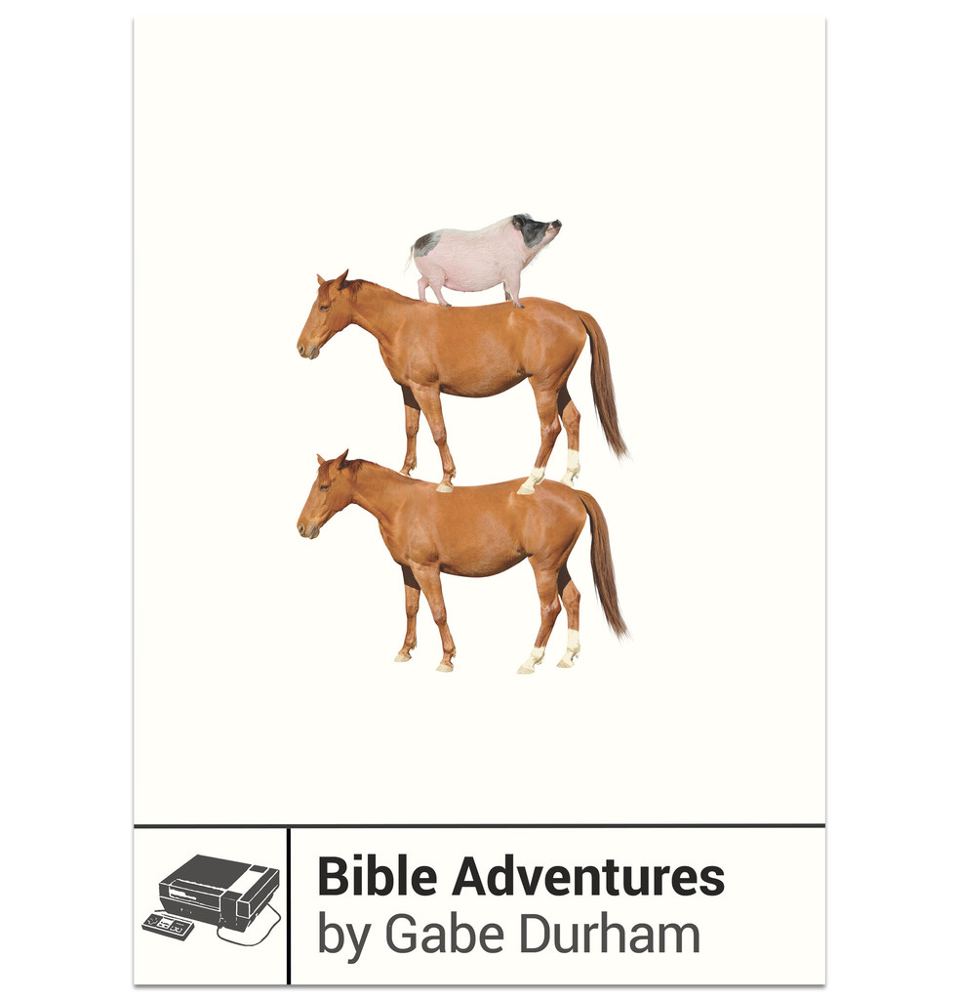
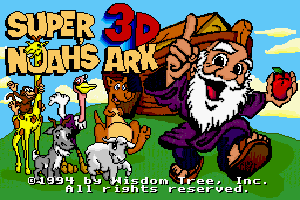
The later years
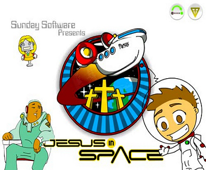
Bongo Loves the Bible
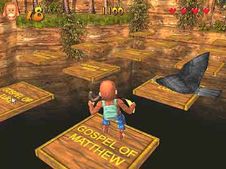
3. How to play Christian video games
- shoot bad guys
- grab stuff
- avoid obstacles
- get to finish line
- answer Bible trivia questions
Crystal Mines → Exodus
Crystal Mines → Exodus
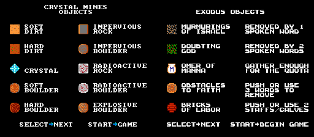
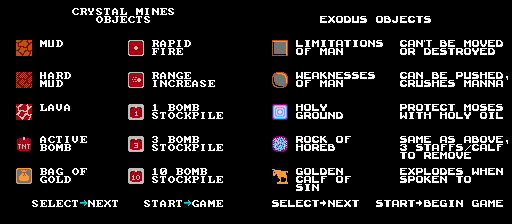
Menace Beach → Sunday Funday
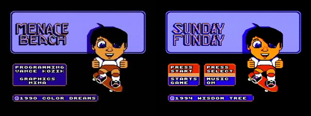
Menace Beach → Sunday Funday
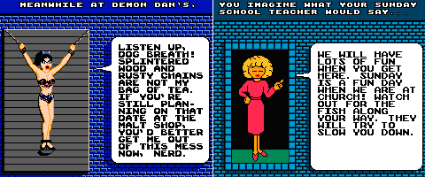
Hand Job → Free Fall → Fish Fall
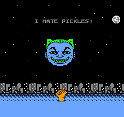
Hellraiser → Wolfenstein → Super 3D Noah’s Ark
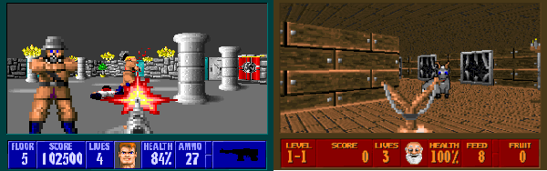
TABII: “Throw a Bible in it”
4. So are they Christian?
Procedural rhetoric
Bogost, Ian. Persuasive Games: The Expressive Power of Videogames. Cambridge, MA: MIT Press, 2007.
Wisdom Tree’s games did not proceduralize religious faith.
Wisdom Tree: yes, by elimination
Characters climb, jump, run, “do almost anything a normal person can do,” Wilson said. “You can never die in our games, but if you don’t complete the level before you run out of health or strength, you have to start over.”
American Bible, Japanese games
American Bible, Japanese games
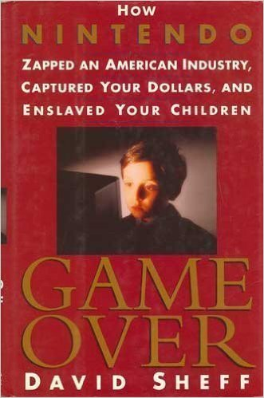
mukokuseki (stateless, without nationality)
Christianity as a brand
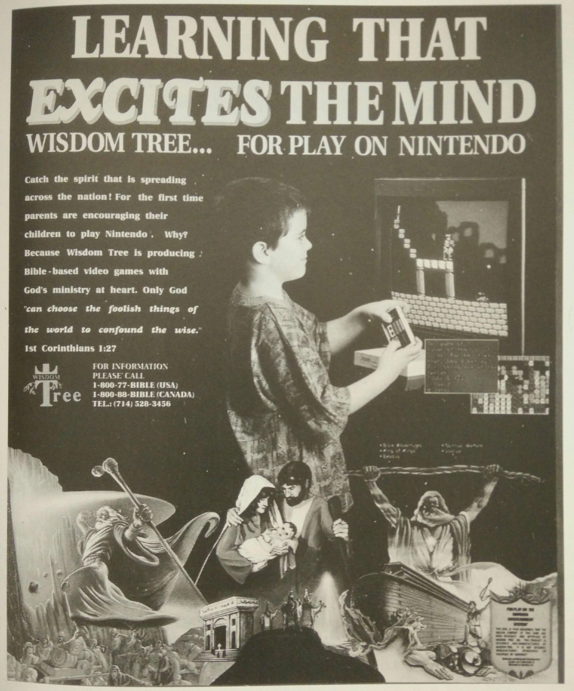
The Aesthetics of Immediacy
Jackson, Gregory S. 2009. The Word and Its Witness: The Spiritualization of American Realism. Chicago: University of Chicago Press.
- “allegorical frames to create social environments in which individuals imagined possibilities for personal transformation”
- “denied the role of passive onlooker”
- “cultivates a kind of double vision that allows audiences to perceive themselves as forever in a transhistorical present”
Rhetorics of play
Sutton-Smith, Brian. The Ambiguity of Play. Cambridge, MA: Harvard University Press, 2001.
- Play as progress
- Play as fate
- Play as identity
- Play as power
- Play as the imaginary
- Rhetoric of the self
- Play as frivolous
5. The first Christian game
Mansion of Happiness (1843)
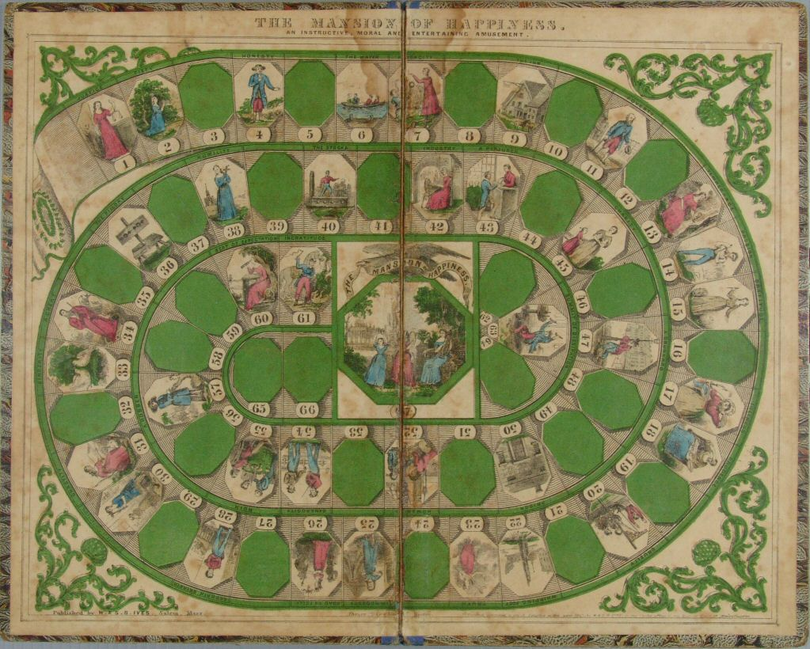
Mansion of Happiness (1843)
“Whoever posesses Audacity, Cruelty, Immodesty, or Ingratitude, must return to his former situation… and not even think of Happiness, much less partake of it”
Hnefatafl → Fox & Geese → Game of Pope and Pagan (1844)
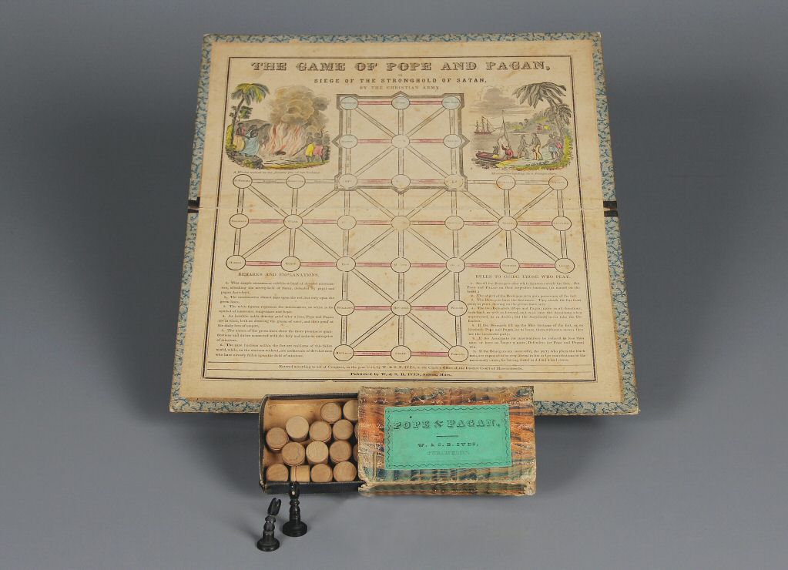
Hnefatafl → Alea evangelii (Irish, 11th century)
Epilogue: Christianity vs. pop culture
The “Corrupt Church”
http://tvtropes.org/pmwiki/pmwiki.php/Main/CorruptChurch
- Assassin’s Creed
- Bioshock 2 and Infinite
- Dead Space
- Dragon Age
- Final Fantasy X
- Resident Evil 4
- Shin Megami Tensei
- Silent Hill
- The Witcher
- World of Warcraft
Binding of Isaac (Edmund McMillen and Florian Himsl, 2011)

El Shaddai: Ascension of the Metatron (Ignition Entertainment, 2011)
That Dragon, Cancer (Ryan and Amy Green, forthcoming 2015?)
Gabe Durham’s encomium
“The ironies of the Wisdom Tree story are many, and are often deployed online for cheap laughs: A Christian company makes unlicensed games! Secret atheists make Christian games! These ‘peaceful’ Christian games sure are violent! But these dualities in both the games’ story and the games themselves make Wisdom Tree’s body of work not just funny but human.”
Thank you!
Questions?
Stray thoughts
- How well do these games fit with Gregory Jackson’s account of homiletic narrative?
- Were they hoping to work up to Jesus in later games? Or did it somehow court blasphemy to have kids play as Jesus? (Possibly supported by the one New Testament story I can think of, where you control Joseph looking for Jesus.)
- What about power, frivolous?
- Games are mindless and violent? Christianity is too serious? Neither of those sounds especially convincing.